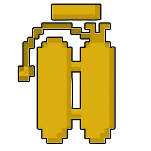

№1422.04.2026нагрудник · редкий · 7340 тиков воздуха
АКВАЛАНГ
Два железных баллона на спину, шланги к маске. Пока в баллонах есть воздух, под водой ты не тратишь ни одного пузыря, видишь в темноте, копаешь быстрее и плывёшь в два раза быстрее. Кончился воздух — снимай, иначе задохнёшься прямо на берегу.
Воздух хранится прямо в прочности предмета: 1 тик под водой = 1 единица. Полоска прочности спрятана — вместо неё своя шкала на экране и строчка в подсказке.

02
II · crafting
Сборка из старого железа
верстак 3×3
Шлем идёт на маску, нагрудник — на ремни, стекло — на иллюминатор. Нагрудник можно брать поношенный: сколько у него было прочности в процентах, столько воздуха и окажется в баллонах.
Железный нагрудник240 / 240
↓ в верстак ↓
Акваланг7340 тиков · 367 сек
03
III · dive simulator
Погружение
20 тиков/с, как в игре
Та же логика, что в моде, тик в тик. Плавай WASD / стрелками или кнопками. Попробуй досидеть под водой до ачивки, а потом выжать баллоны досуха.
Вы умерли!
время
наковальня
04
IV · air supply
Сколько можно не дышать
6:07 на одном баллоне
Двигай ползунок — так меняются полоска на экране и строчка в подсказке. Цвета те же, что в моде: голубой, жёлтый после половины, красный на последней четверти.
100%
025%50%100%
05
V · armor
Крепче незерита
10 брони · 4 твёрдости
Про воздух все помнят, а про броню забывают. У акваланга 10 единиц защиты и 4 твёрдости: это больше, чем у незеритового нагрудника (8 и 3). Сверху ещё 10% сопротивления отбрасыванию, как у незерита. Выбери силу удара и остальную броню, а таблица посчитает урон по формуле 1.19.2.
Шлем, поножи, ботинки
06
VI · под водой
Подводные камни
то, что видно только в коде
Копать под водой
Спешка I прибавляет 20% к скорости копания, но под водой игра и так режет её в 5 раз, а если ты не стоишь на дне, то ещё в 5. Спешка это не отменяет. Без Подводника на шлеме камень всё равно ломается медленно.
07
VII · enchantments
Две книги только для него
Энчант-апдейт
Зачарованная книга Водохлёбус
На суше баллоны сами понемногу набирают воздух: +1 секунда каждые 2 секунды. Полный баллон с нуля — примерно за 12 минут на берегу. Нырнул — таймер сбрасывается.
редкость
необычное
уровень
I
цена стола
от 12
∞ кг
Зачарованная книга Жирный пидор
Проклятие. Пока ты в воде, тянет вниз: −0,08 к скорости каждый тик, до −0,35 блока за тик. Всплыть почти нереально — только держать «вверх» и молиться. Снять с предмета нельзя.